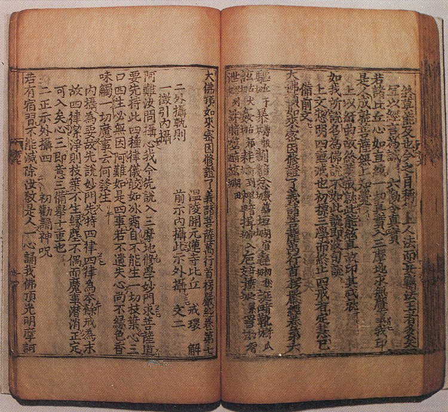
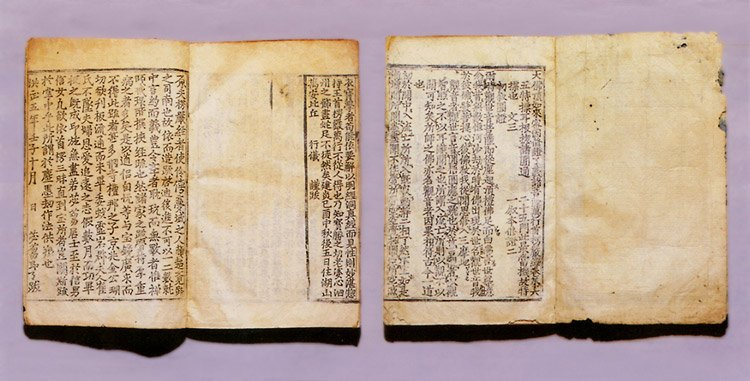
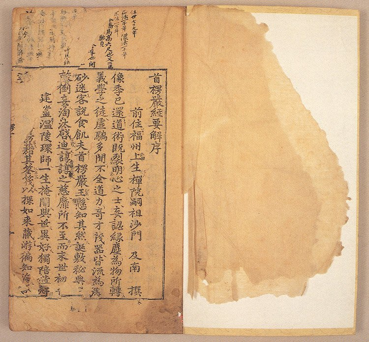
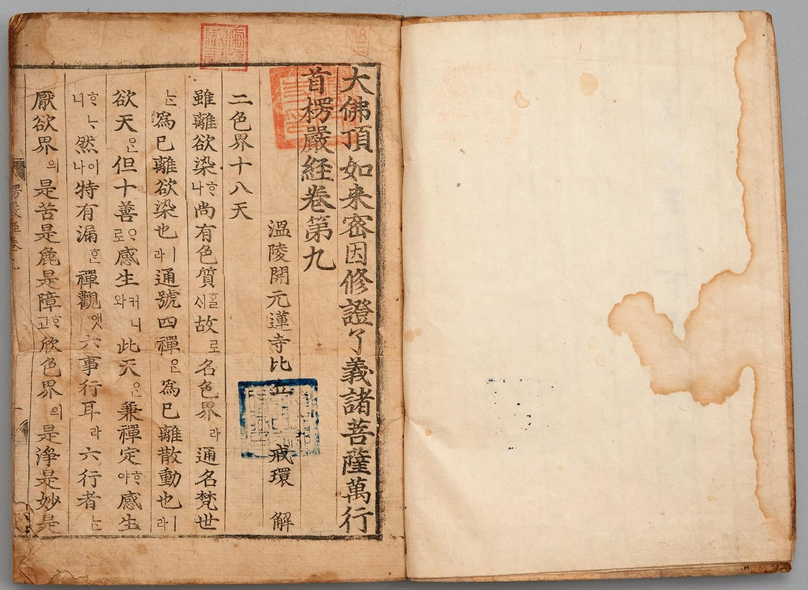
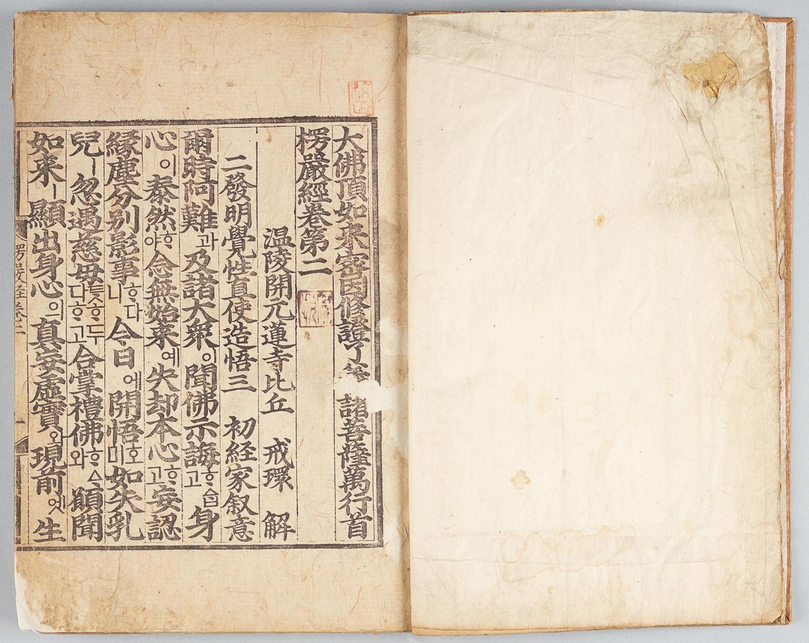

《대불정수능엄경》은 흔들리는 마음을 내려놓고 본래 밝고 오묘한 참마음을 되찾는 길을 차근차근 밝혀 놓은 경전입니다. 부처님의 이치와 수행의 방법이 함께 담겨 있어 예로부터 불교에 입문하는 이들이 반드시 거쳐 가는 교재로 쓰였으며, 우리나라 불교의 근본 경전 가운데 하나로 꼽힙니다. 대한불교밀인종은 이 경을 소의경전(所依經典)으로 삼습니다.
본래 이름은 스무 자에 이르지만, 그 안에 경 전체의 줄거리가 들어 있습니다. 대불정(大佛頂)은 부처님 정수리에서 드러나는 더없이 높은 가르침을, 여래밀인(如來密因)은 여래께서 깨달음에 이르신 은밀하고 근본적인 원인을, 수증요의(修證了義)는 그것을 닦아 증득하는 완전한 뜻을, 제보살만행(諸菩薩萬行)은 보살들이 실천하는 온갖 수행을 가리킵니다. 끝의 수능엄(首楞嚴)은 무엇에도 꺾이지 않는 굳건한 선정, 곧 모든 일을 끝까지 꿰뚫어 마치는 삼매를 뜻합니다.
대한불교밀인종의 이름 또한 이 경의 ‘여래밀인’에서 비롯되었습니다.
부처님의 시자 아난(阿難)이 홀로 걸식을 나갔다가 마등가(摩登伽)의 주술에 걸려 계를 잃을 위기에 처하자, 부처님께서 정수리로 광명을 놓으시고 신주(神呪)를 설하여 문수보살을 보내 아난을 구해 오게 하셨습니다. 돌아온 아난은 많이 듣기만 하고 도력(道力)을 갖추지 못한 자신을 깊이 뉘우치며 참된 선정에 드는 길을 여쭈었고, 이 물음에 부처님께서 차례로 답하신 것이 이 경의 내용입니다.
경은 크게 마음의 본바탕을 깨닫는 길[見道], 그것을 닦아 나아가는 길[修道], 그리고 수행의 단계와 수행 중에 만나는 장애를 밝히는 길[證果]로 이어지며, 그 바탕에는 계율을 청정히 지키고 선정을 닦아 번뇌로 가득한 마음을 버리고 묘명(妙明)한 참마음을 밝히라는 가르침이 흐르고 있습니다.
제7권의 대불정수능엄신주는 수행자를 온갖 장애에서 지켜 주는 주문으로, 지금도 여러 선원과 사찰에서 날마다 독송되고 있습니다. 대한불교밀인종 역시 이 신주와 천수대비주를 외우는 주력(呪力) 수행을 중요한 방편으로 삼습니다.
제7권은 아난에게 “마음을 거두어 삼마지에 들려면 먼저 네 가지 계율을 굳게 지녀야 한다”고 일러 주시는 말씀으로 시작합니다. 계(戒)로 몸과 마음을 맑히고, 그래도 남은 묵은 습기는 신주의 힘으로 녹이라는 가르침입니다. 계율과 선정, 그리고 진언이 한 흐름으로 이어지는 대목입니다.

제6권의 관음 이근원통은 《법화경》의 관세음보살보문품과 더불어 우리나라 관음신앙이 깊이 뿌리내리는 데 큰 힘이 되었습니다. 이처럼 《능엄경》은 참선과 진언, 이치와 실천을 한 경 안에 아울러 ‘작은 화엄경’이라 불릴 만큼 넓고 깊은 가르침을 담고 있습니다.
《능엄경》은 고려 시대부터 선가(禪家)를 중심으로 활발히 읽히고 연구되었습니다. 현재 전하는 가장 오래된 판본은 1235년(고려 고종 22) 이승광 등이 해인사에서 새긴 목판본입니다.
1372년(공민왕 21)에는 경기도 안성 청룡사에서 경판을 새겼는데, 책 끝에 대장군 김호와 영암군부인 최씨, 정순옹주 이씨 등이 시주하였다는 기록이 남아 있습니다. 이 경판으로 찍은 책은 조선 전기까지 거듭 인출되어, 검푸른 표지에 금색 글씨로 제목을 쓴 책 등 여러 본이 지금까지 전하고 있습니다.

유교를 나라의 근본으로 삼아 불교를 억누르던 조선 초에도 《능엄경》의 간행은 그치지 않았습니다. 1401년(태종 1)에는 태상왕 태조의 명으로 신총이 큰 글씨로 경문을 쓰고, 대덕 명호를 비롯한 많은 이들이 힘을 모아 목판을 새겼습니다. 책 끝에 권근이 지은 글이 실려 있어 그 경위를 알 수 있으며, 열 권 전체가 온전히 전하는 독자적인 판본이라는 점에서도 귀하게 여겨집니다.

이어 1433년(세종 15)에는 성달생이 직접 쓴 글씨로 간행하였고, 1443년에는 이를 바탕으로 화암사에서 다시 펴냈습니다. 1488년(성종 19)에는 명필 박경이 판하를 쓴 판본도 나왔습니다.
세조는 《능엄경》을 우리말로 옮기는 일에 직접 나섰습니다. 세조가 손수 한글 구결을 달고, 혜각존자 신미가 구두를 떼었으며, 한계희 · 김수온 등이 번역을 맡았습니다. 1461년(세조 7)에는 1455년에 주조한 금속활자 을해자와 함께 쓰도록 새로 만든 한글 활자로 먼저 찍어 냈는데, 지금 전하는 책에도 검은 먹과 붉은 먹으로 고친 자리가 남아 있어 한 자 한 자 바로잡던 정성을 엿볼 수 있습니다.

같은 해 불경을 한글로 풀어 펴내기 위해 세운 간경도감(刊經都監)은 활자본의 잘못을 바로잡아 이듬해인 1462년(세조 8) 목판으로 다시 간행하였습니다. 이것이 간경도감이 펴낸 첫 번째 언해 불경입니다. 경문과 풀이를 큰 글자 · 중간 글자 · 작은 글자로 나누어 쓰는 편찬 방식과 글씨체는 이후 간행된 여러 국역 불경의 본보기가 되었습니다. 이때 찍은 열 권 열 책이 고스란히 남은 동국대학교 소장본은 국보로 지정되어 있습니다.

사진의 권2에는 「校正(교정)」과 「學悅(학열)」이라는 도장이 찍혀 있어, 간경도감의 일에 참여한 학열 스님이 교정을 본 책으로 여겨집니다. 한자 경문 사이사이에 한글 토가 달려 있어, 오백여 년 전 우리 조상들이 이 경을 어떻게 소리 내어 읽었는지를 오늘에 전해 줍니다.
이 밖에도 고려 보환의 《능엄경신과》와 《수능엄경환해산보기》, 조선 유일과 의첨의 《능엄경사기》 등 우리 스님들의 주석서가 전하며, 해인사판 · 송광사판(1609) · 용장사판(1635) 경판이 지금까지 남아 있습니다. 근대에 들어 1922년에는 백용성 스님의 번역본이 간행되었습니다. 오늘날 전하는 여러 판본은 국보와 보물, 지방 유형문화유산으로 지정되어 소중히 보존되고 있습니다.